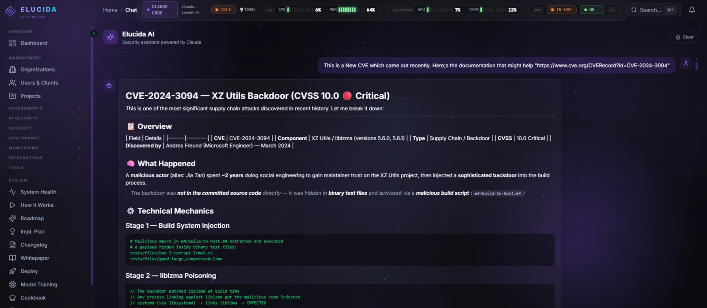

Test it like an attacker.
An adaptive AI engine that reasons through vulnerabilities the way a senior pentester does — forming hypotheses, chaining discoveries, and proving impact with evidence, not just running fixed scans.
The AI engine planning, calling tools, and chaining discoveries in real time — captured from the running platform.
Scanners run pipelines.
Elucida runs an investigation.
Reasoning, not templates
An LLM tool-use loop analyzes each response, forms a hypothesis, and chains the next move — fetch homepage → detect Apache 2.4.49 → test CVE-2021-41773 → confirm traversal → report with evidence.
- Three-tier failover: Claude API → local Qwen3 14B → deterministic static pipeline
- Engine Intelligence: planning, CVE nudges, finding-detection patterns, an adviser when stuck
- 10–20 targeted findings with evidence chains, not 2–5 generic ones
Guide the engine mid-assessment
A live operator chat lets you steer the AI while it works — nudge it toward a suspicious endpoint, scope it back, or ask why it made a call. Every finding lands with full CVSS / CWE / OWASP lifecycle.
- Real-time dashboard: WebSocket monitoring, flow tracker, crawl map, embedded terminal
- AI finding validation with confidence scoring and false-positive detection
- Meta-learning: skills extracted from each engagement, success-rated, injected into the next

The major kit
17 assessment types
Web (WAPT black/gray-box), API (REST/GraphQL/gRPC), network, mobile (Android/iOS), AI/ML, compliance, and SAST.
94 tool handlers
nmap, nuclei, ffuf, sqlmap, frida, semgrep, graphql_introspect, bola_test, prompt_fuzz, mcp_security_audit…
Two-layer safety
Proves vulnerabilities without causing damage — hard blocklist for destructive ops, 100% resistance to jailbreaks.
9 compliance maps
PCI DSS 4.0, OWASP Top 10, NIST CSF 2.0, ISO 27001, SOC 2, HIPAA, OWASP SAMM, MITRE ATT&CK, ISO 42001.
Multi-tenant platform
4 roles, row-level org isolation, white-label reports, client portal, 117 automated tests.
Brand monitoring
crt.sh, typosquatting (5 algorithms), Safe Browsing, URLhaus, subdomain takeover, DNS watch.